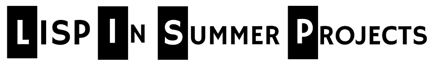

completed-projects
|  |
We initially received 418 signups from 55 countries. From those we received a total of the 65 completed projects from 22 countries across 7 different dialects of Lisp including Clojure, Common Lisp, Racket and Scheme.
| First Name | Last Name | Country | Project Name | LISP dialect |
| Emanuele | Acri | Italy | prolog-talk | Commmon Lisp |
| Jaeden | Amero | United States | Random QSO Generator | Racket |
| Peter | Barnett | United States | Todo-Repl | Clojure |
| Nikita | Beloglazov | Belarus | Nonojure Recognition | Clojure |
| Eric | Bergstrome | Canada | Chisa | other |
| Mike | Bobak | United States | Knowledge-modeling-env | Commmon Lisp |
| John | Boyle | United States | Emiya | Arc |
| Bruno | Burke | Germany | Musilisp | Commmon Lisp |
| Chip | Collier | United States | Plant | Scheme |
| Marc A. | Coram | United States | Primrec | Racket |
| Pius von | D niken | Switzerland | Celine | Clojure |
| Robert | Day | United Kingdom | Github Issue Charts | Clojure |
| Gary | Deer | United States | Clojure-Quest | Clojure |
| Evan | Donahue | United States | Boris The (Web) Spider | Racket |
| Sergii | Dymchenko | United States | SGoogle Code Jam Solver | Commmon Lisp |
| Jonas | Enlund | Finland | CLJSFiddle | Clojure |
| Jonas | Enlund | Finland | Learn Datalog Today! | Clojure |
| Thomas | Fitzsimmons | Canada | Emacs Slime Volleyball | Emacs Lisp |
| E. Cayenne | Geis | United States | Blocks in Space | Clojure |
| Eric | Gesell | United States | Vulture | Clojure |
| Bastien | Guerry | France | WLMMAP | Clojure |
| Saupin | Guillaume | France | Lisphys | Commmon Lisp |
| Andrew | Gwozdziewycz | United States | Hassle | other |
| Martin | Haesler | United Kingdom | MetalHead | Commmon Lisp |
| Martin | Haesler | United Kingdom | Beebster | Commmon Lisp |
| Ghost | Hamlet | China | Js1k | Clojure |
| Zhou | Honglin | China | Hortus | Clojure |
| Jordan | Howlett | Canada | Codemirror-cljs | ClojureScript |
| Abhinav | Jauhri | United States | Rkt-heaps | Racket |
| Sean | Johnson | United States | Falkland CMS | Clojure |
| Thorsten | Jolitz | Germany | iOrg | PicoLisp |
| Zachary | Kanfer | United States | Unit-test.arc | Arc |
| K lm n | Kiss | Hungary | Tubegame | Commmon Lisp |
| Cory | Koch | United States | Prayer Times | Emacs Lisp |
| Dimitrios-Georgios | Kontopoulos | United Kingdom | Sisor | Commmon Lisp |
| Zach | Kost-Smith | United States | CLANN | Commmon Lisp |
| Thomas Greve | Kristensen | United Kingdom | Propaganda | Clojure |
| Mu | Lei | China | Artanis | Scheme |
| Max | Li | Canada | Unlambda Interpreter | Clojure |
| Cameron | Matheson | United States | B-ounc | Clojure |
| Ryan | McGowan | United States | Manners | Clojure |
| Piotr | Mieszkowski | Poland | GAS | Commmon Lisp |
| Janne | Nykopp | Finland | Notewhacker | Commmon Lisp |
| Javier | Olaechea | Peru | trolling-success | Commmon Lisp |
| Denis | Papathanasiou | United States | Tweet-secret | Clojure |
| Nehemiah | Paramore | United States | Easy-timer | Emacs Lisp |
| Ryan | Pavlik | United States | CL-autowrap | Commmon Lisp |
| Jos Santos Martins | Pereira | Portugal | Common City | Commmon Lisp |
| Longhao | Piao | United States | clojure-downloader | Clojure |
| Sibi | Prabakaran | India | Clj-uclassify | Clojure |
| Cong-Xin | Qiu | United States | Schemannian | Racket |
| Mihir | Rege | India | Phlegm | Commmon Lisp |
| Karen | Sargsyan | Taiwan | liTopos | Commmon Lisp |
| Vignesh | Sarma | India | Meghathil | Clojure |
| Mark M. | Scala | United States | Texas Holdem for IRC | Commmon Lisp |
| Akshay | Srinivasan | United States | Matlisp-tensor | Commmon Lisp |
| Margit | Szendrei | Hungary | Propositional Logic | Scheme |
| Fengnian | Tian | Netherlands | E-Toothbrush | Commmon Lisp |
| Jovan | Trujillo | United States | Vacietis | Commmon Lisp |
| Lars | Tveito | Norway | Shared buffer | Emacs Lisp |
| Dogadailo Dmytro | Victorovich | Ukraine | MetaJS | other |
| Michael | Vollmer | United States | Lalla | Commmon Lisp |
| Andreas | Wilfer | Sweden | Glthing | Commmon Lisp |
| Canshu | Yang | China | Hack-asm | Commmon Lisp |
| Leo | Zovic | Canada | Deal | Commmon Lisp |
( sponsored by LispNYC, ClojureNYC the Association of Lisp Users and you )